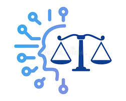

Why Ethics Matters in AI
AI systems can influence hiring, healthcare, loans, and policing, so mistakes can have real consequences. Ethical design focuses on fairness, transparency, privacy, and accountability.

AI systems can influence hiring, healthcare, loans, and policing, so mistakes can have real consequences. Ethical design focuses on fairness, transparency, privacy, and accountability.

Developers can reduce harm by testing for bias, limiting data collection, documenting model behavior, and making sure users understand what the system can and cannot do.